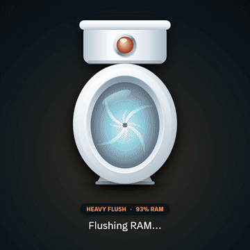

NJ-Flush, the free Windows RAM cleanerYour RAM is full. Flush it.
One double-click hands memory back to Windows, while a toilet flushes on your screen.
The fuller your RAM, the harder it flushes.
NJ-Flush reads your memory before it starts and picks one of four flushes. The flush itself always does the full job.
Light flush
One press, a gentle half drain, a quick refill.
Medium flush
The full swirl, all the way down the drain.
Heavy flush
Murky water, two presses, the bowl shakes and splashes.
Clogged
The water rises, the press fails, the plunger goes in three times, then it bursts free.

It sits above your clock and waits.
It really frees the memory
Empties every working set, writes the modified list to disk, purges the standby cache and stops leftover helper processes from closed developer sessions. Nothing else is touched.
Flush from anywhere
Press Ctrl Alt F, or double-click the widget.
Auto-flush
Turn it on and NJ-Flush flushes by itself when RAM stays at 90% for 30 seconds, at most once every 10 minutes.
Memory breakdown
One bar shows what holds your RAM: apps, kernel, cache, free, and the share no flush can reach.
Make it yours
Right-click the widget for Settings: turn the animation or sound off, set the volume, the wait between flushes and more.
The widget above your clock
Live RAM, dim until you hover. Its bar takes the colour of the flush it would play. Drag the slider:
One download, one admin prompt.
Download
Get NJ-Flush.exe from the latest release. One file, no installer.
Approve once
The first run asks for admin rights one time, to register the task a RAM flush needs.
Flush
From then on, every double-click flushes with no prompt at all.
Windows 10 or 11. NJ-Flush tells you when a new version is out and updates itself in one click. The file is not code-signed yet, so SmartScreen may ask on the first run: choose More info, then Run anyway. Uninstall any time from the widget's menu.
The setting Restart File Explorer on flush frees Explorer's memory but can shuffle your desktop icons. NJ-Sort, a companion tool, keeps Windows desktop icons where you put them and puts them back after NJ-Flush restarts File Explorer.